BUYMAでいま何が売れているかを、写真つきで毎日確認できるツールです。開き方から、それぞれの画面の見方、毎日の使い方までをまとめました。5分ほどで読めます。
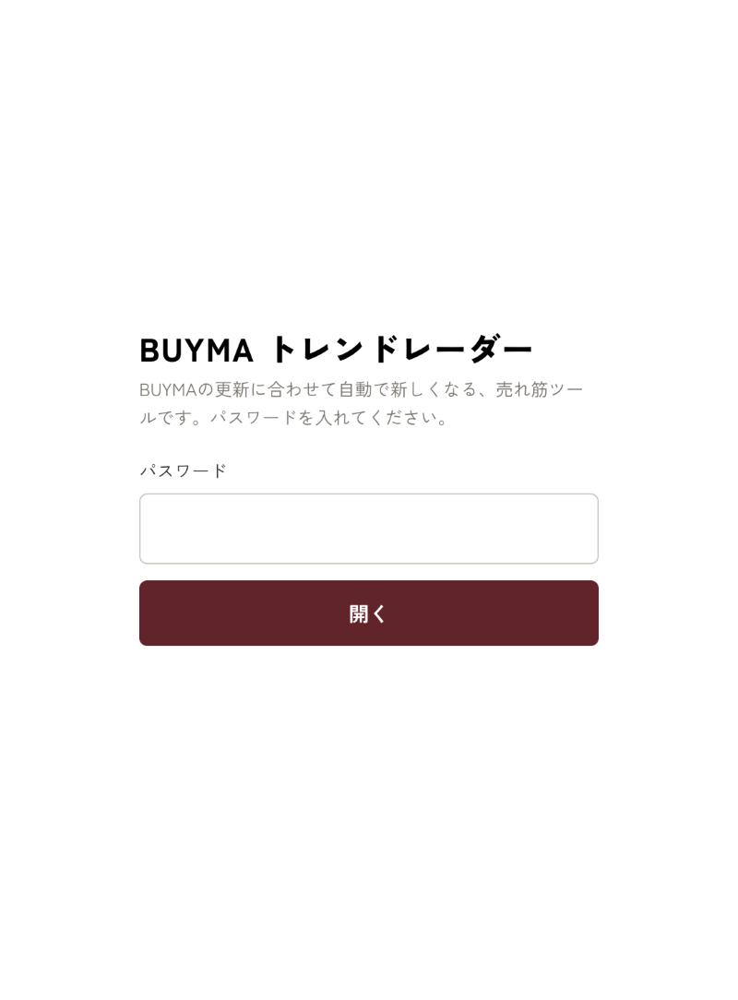
ホーム画面に追加しておくと便利です。アプリのようにワンタップで開けます。
ページを開いて最初に見える部分です。
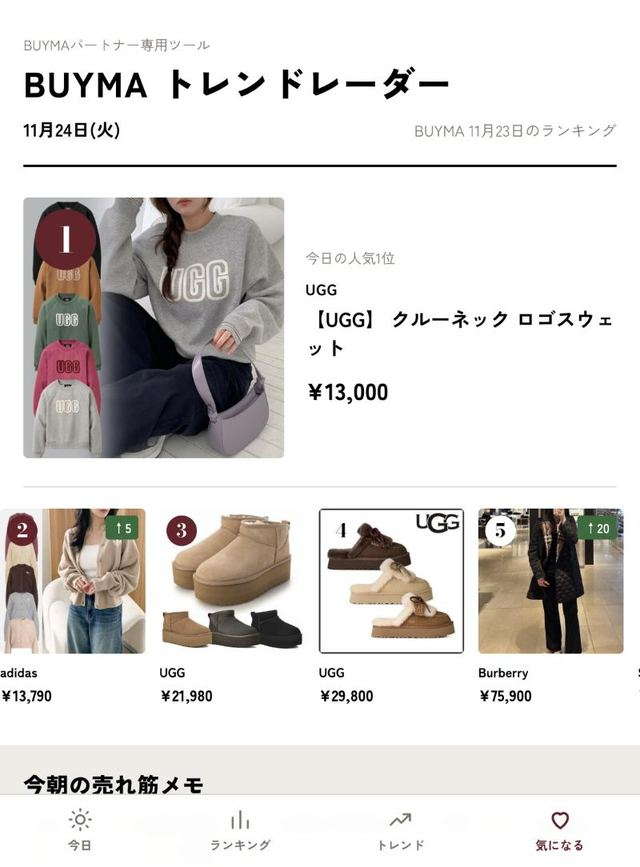
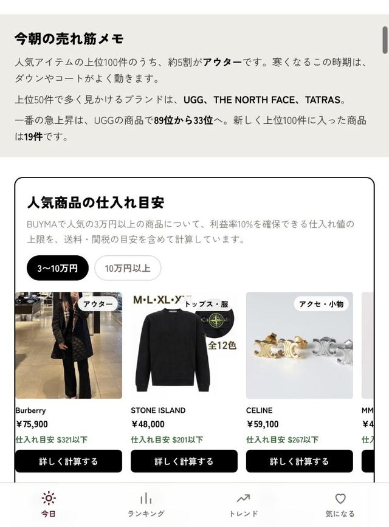
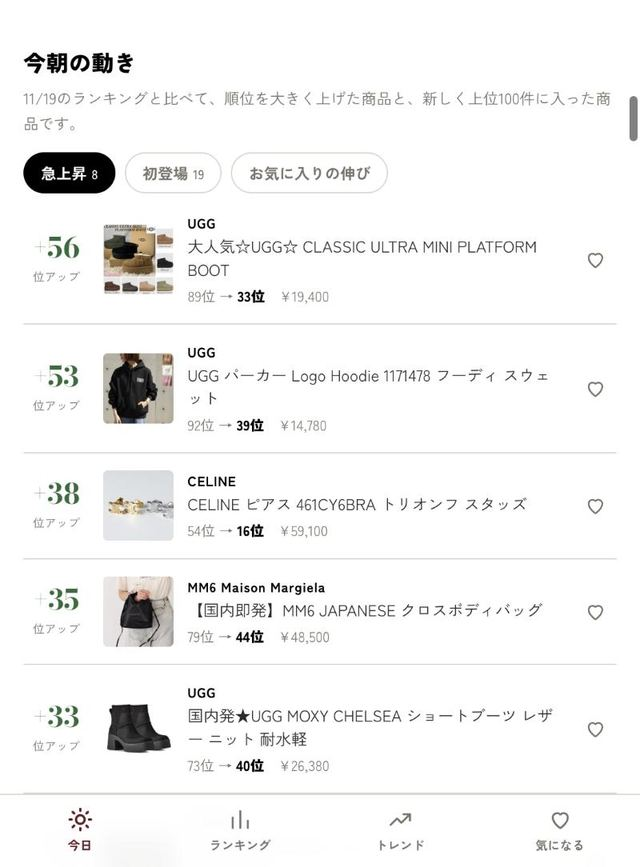
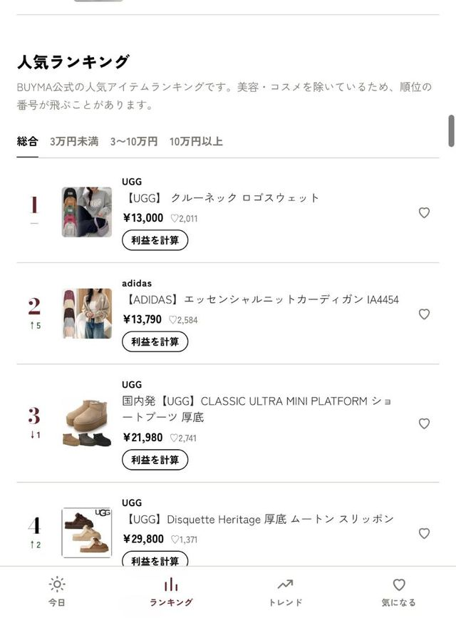
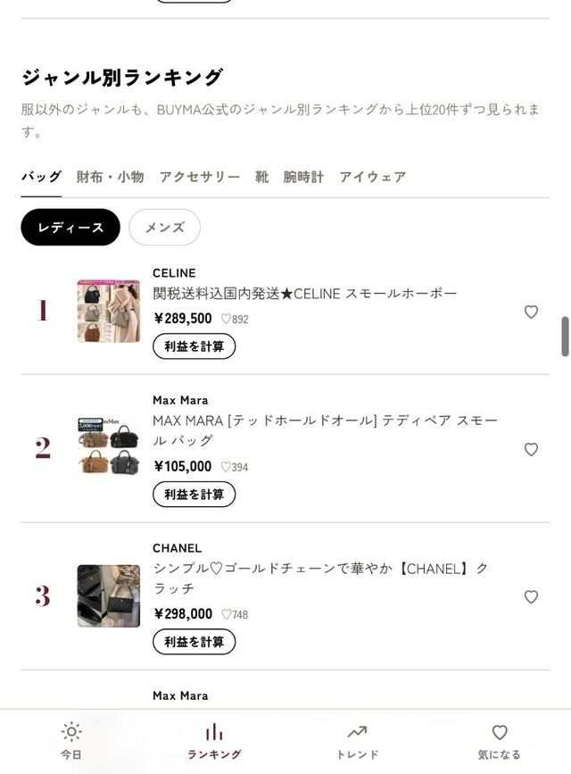
写真や商品名を押すと、その商品の詳しい画面が下から開きます。
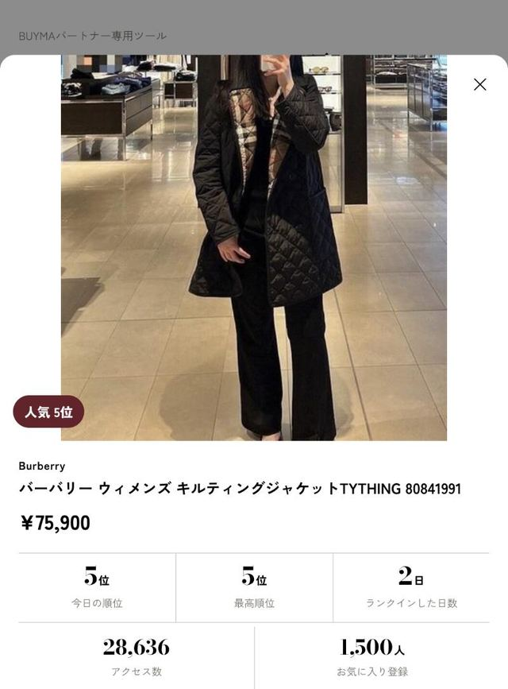
商品カルテの中、またはランキングの「利益を計算」ボタンから開けます。
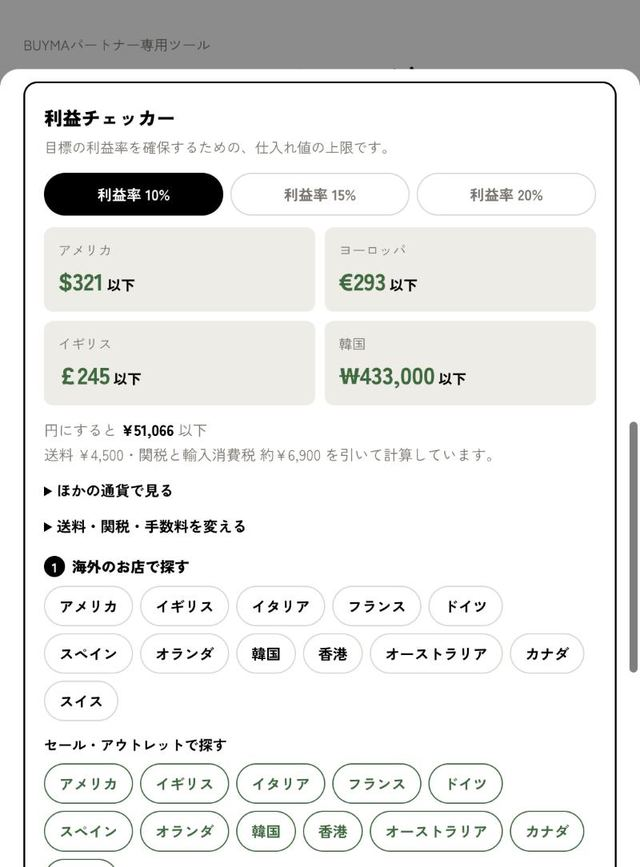
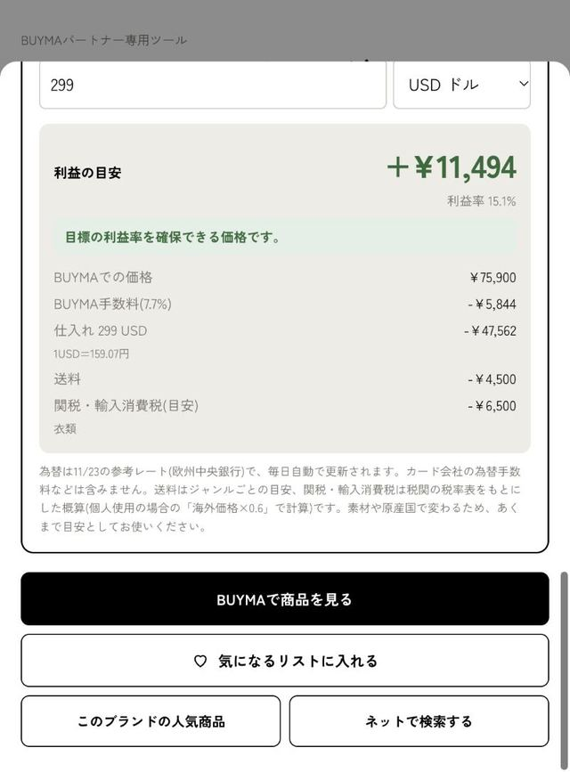
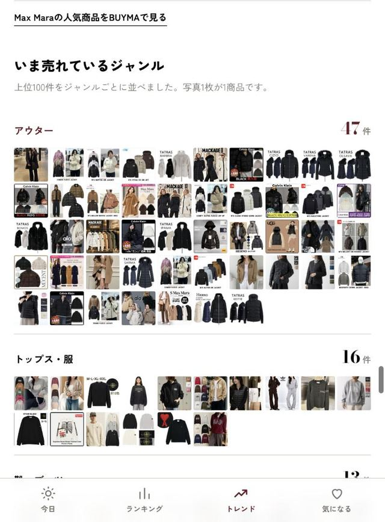
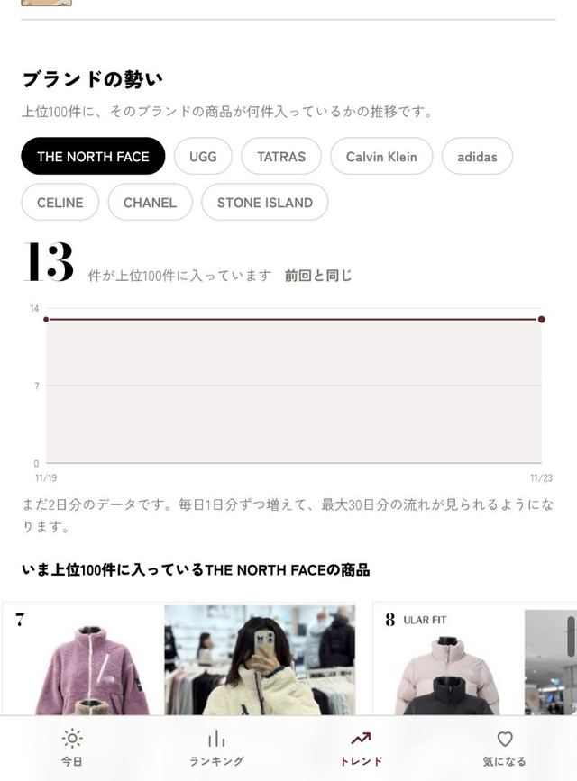
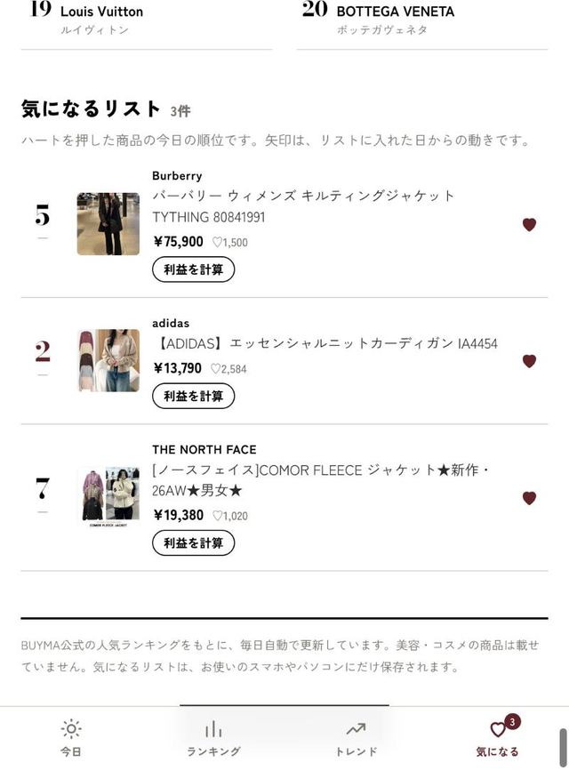
毎日数分、この順番で見るのがおすすめです。